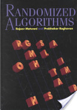
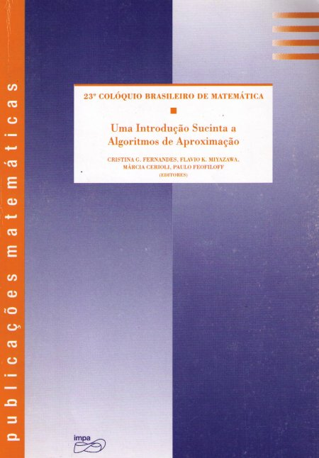

| # | Horário | Aluno |
| 1 | 13:00 | DANIEL LOPES BRAZ DOS SANTOS |
| 2 | 13:04 | GUILHERME IRIA D'ABBADIA FONTES PEREIRA |
| 3 | 13:08 | CARLOS FILIPE BENEVIDES |
| 4 | 13:12 | JUAN CARLOS TOLEDO BAPTISTA |
| 5 | 13:16 | LUIZ FELIPE DA COSTA PERICOLO BARBOSA |
| 6 | 13:20 | THIAGO MACHADO SANTOS |
| 7 | 13:24 | FILIPE QIANG ZHOU |
| 8 | 13:28 | JADE MOREIRA DA COSTA |
| 9 | 13:32 | PEDRO IVO MARQUES L DE L RIBEIRO |
| 10 | 13:36 | FÁBIO FERMAN |
| 11 | 13:40 | PEDRO FELLIPE PASSOS CORTEZ |
| 12 | 13:44 | DANIEL DAIM LOPES DE ARAUJO |
| 13 | 13:48 | WANDER MENDONÇA SOARES |
| 14 | 13:52 | BRENO ANDRADE VECCI CHAGAS |
| 15 | 13:56 | MAGNO ARLINDO GOMES FERREIRA |
| 16 | 14:00 | LUCAS SIMOES DE SOUSA ARNAUD |
| 17 | 14:04 | RODRIGO DE SOUZA STUHL |
| 18 | 14:08 | RAPHAEL DUARTE PAIVA |
| 19 | 14:12 | FABIO MEDEIROS RANGEL |
| 20 | 14:16 | LEONARDO MÕES GOMES |
| 21 | 14:20 | VITOR PEREIRA MACHADO |
| 22 | 14:24 | DIEGO DE OLIVEIRA MARTINS |
| 23 | 14:28 | MATEUS GREGORIO DE SOUZA |
| 24 | 14:32 | ANDRÉ GUSTAVO LIMA FIGUEIREDO |
| 25 | 14:36 | CARLOS VICTOR DA SILVA |
| 26 | 14:40 | THIAGO GONÇALVES ESCOBAR |
| 27 | 14:44 | BRUNO SOUSA CAMPOS DA COSTA |
| 28 | 14:48 | FLAVIO COUTINHO DA COSTA |
| 29 | 14:52 | GABRIEL RODRIGUES DO CARMO |
| 30 | 14:56 | LUIZ FELIPE ANTUNES DIAS |
| 31 | 15:00 | PALOMA THOME DE LIMA |
| 32 | 15:04 | AUGUSTO ACIOLI PINHO VANDERLEY |
| 33 | 15:08 | HÉLIO HENRIQUE MACHADO BARBOSA |
| 34 | 15:12 | MARCIO FARIAS DIAS RODRIGUES |
| Randomizados |
Randomized Algorithms |
|||
| Randomized Algorithms | Probability and Computing | Introdução aos Algoritmos Randomizados | ||
| (Raghavan & Motwani) | (Upfal & Mitzenmaker) | (Figueiredo, Fonseca, Lemos & Pereira de Sá) | ||
|  |  |  |
||
| | ||||
| NP-Completude |
NP-Completeness |
|||
| Computers and Intractability | ||||
| (Garey & Johnson) | ||||
 | ||||
| | ||||
| Aproximativos |
Approximation Algorithms |
|||
| Approximation Algorithms | Introduction to Algorithms | Uma Introdução Sucinta aos Algoritmos de Aproximação | ||
| (Vazirani) | (Cormen, Leiserson, Rivest & Stein) | (Cerioli, Feofiloff, Fernandes & Miyazawa, editores) | ||
 |  |  |